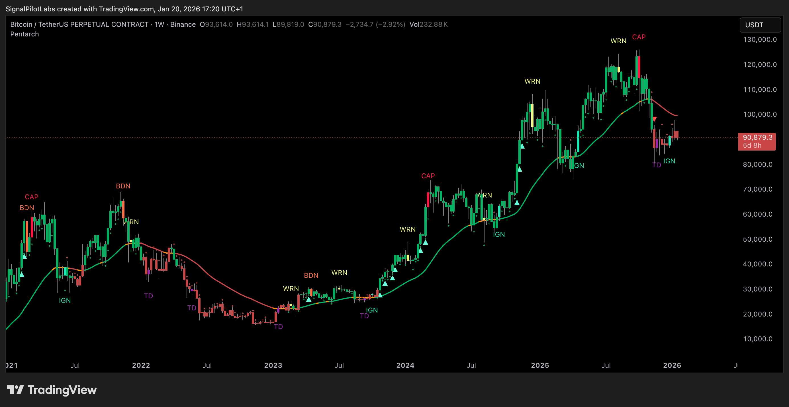

Signal Pilot Documentation¶
Most indicators show signals. Signal Pilot shows cycles.
Markets move in cycles. Every asset. Every timeframe. Most users chase signals. Signal Pilot tracks structure.
The Complete Cycle System
Close-confirmed cycle detection. Audited for zero repaint.

Pentarch cycle detection on BTC/USDT weekly — identifying accumulation, markup, distribution, climax, and decline in real time.
-
Cycle-Aware Detection Tracks market structure across accumulation, markup, distribution, climax, and decline phases. Structure over signals.
-
Close-Confirmed Signals All layers confirm at bar close before signals fire. Audited for zero repaint. Transparency at every layer.
-
Universal Application Cycles repeat across all assets and timeframes. Same structure. Different scale.
⚠️ IMPORTANT DISCLAIMER
This documentation is for educational and informational purposes only. It is NOT investment, financial, or trading advice. All examples and combinations shown are hypothetical and for illustrative purposes only. Past performance does not indicate future results.
Trading and investing involve substantial risk of loss. You should consult with a qualified financial professional before making any investment decisions. Signal Pilot provides technical analysis tools only - not investment recommendations.
🚀 Signal Pilot Suite (The Complete Cycle System)¶
-
Pentarch - Cycle Phase Detection Identifies cycle position across TD (accumulation), IGN (markup), WRN (distribution), CAP (climax), BDN (decline). Four-layer detection system confirms before signals fire. Read Guide
-
Janus Atlas - Multi-Timeframe Auto-Levels Displays HTF pivots, session boundaries, VWAP, volume profile nodes, and structural levels. Automatically updates at bar close. Read Guide
-
OmniDeck - Unified Chart Overlay Combines Exhaustion Counter, Squeeze, liquidity sweeps, EMAs, SuperTrend, BMSB, regime detection, zones, and pattern recognition. 10 systems with unified alerts. Read Guide
-
Augury Grid - Multi-Timeframe Scanner Monitors 7 symbols × 3 timeframes with quality scoring. On-chart table displays ranked opportunities with star ratings. Read Guide
-
Volume Oracle - Regime Detection 5-system volume intelligence: Regime Detection, Signal Generation (BULL/BEAR with ⭐⭐⭐ quality), Risk Management (auto Entry/Stop/Targets), HTF Confirmation, and Strategy Modes. Read Guide
-
Harmonic Oscillator - Multi-Component Momentum Combines MACD, RSI, and StochRSI into unified 0-100 scale. Five-oscillator voting system identifies momentum alignment and divergences. Read Guide
-
Plutus Flow - Statistical OBV Analysis Spike-clipped On-Balance Volume with automatic divergence detection. Identifies accumulation and distribution through volume-price relationships. Read Guide
Suite Overview¶
Want to see how all 7 indicators work together?
→ Signal Pilot Suite Overview - Quick selector, recommended combinations, learning path
👋 New User Resources¶
System Requirements
Check compatibility before installation
Which Indicator to Start?
Find the best fit for your analysis approach
Quick Start
Get your first event in 5 minutes
Learning Paths
Structured roadmaps by analysis approach
Advanced Learning Guides
Deep-dive psychology, decision trees, and mistakes
Cheat Sheets
Quick reference cards for all indicators
Alert Setup
Get notified when events fire
Troubleshooting
Installation and common issues
📌 Most Common Tasks¶
Quick links to common tasks:
Set Up Alerts
Get notified when events fire
Understand Events
Learn what TD, IGN, CAP, BDN mean
Choose Indicators
Which indicators match your style?
Get Quick Answers
Common questions answered
Learn the Workflow
Complete analysis workflow
Fix Problems
Troubleshoot common issues
Configuration Wizard
Interactive guide to configure your indicators
Search Guide
Learn how to use documentation search effectively
🎯 Quick Selector¶
Indicator selection by focus area:
- Cycle event detection: Pentarch v1.0 - Five cycle events across accumulation, markup, distribution, climax, and decline (TD/IGN/WRN/CAP/BDN)
- Key level visualization: Janus Atlas v1.0 - 60+ level types (timeframe, session, VWAP, volume profile, structure)
- Comprehensive analysis: OmniDeck v1.0 - 10 systems combined (EC, Squeeze, EMAs, Zones, Patterns, etc.)
- Multi-symbol scanning: Augury Grid v1.0 - 7-symbol × 3 TF monitoring with quality scores
- Volume-based analysis: Volume Oracle v1.0 - 5-system regime detection + event generation with quality ratings
- Momentum/oscillator analysis: Harmonic Oscillator v1.0 - 7-component voting system for momentum consensus
- Money flow (OBV) analysis: Plutus Flow v1.0 - Advanced OBV with divergence detection
🎓 Advanced Learning Guides¶
In-depth guides covering analysis psychology, decision frameworks, and common mistakes:
📚 OmniDeck Learning Guide
Master multi-system analysis: the 3-2-1 rule, analysis paralysis solutions, system combinations, and decision frameworks for 10+ indicator alignment.
Read Guide →🎯 Pentarch Learning Guide
Master the 5-cycle event system (TD, IGN, WRN, CAP, BDN), emotional recovery protocols, and avoid beginner traps in cycle-based analysis.
Read Guide →〰️ Harmonic Oscillator Learning Guide
Master momentum analysis: 7-oscillator voting consensus, divergence psychology, and why overbought doesn't mean reversal.
Read Guide →📍 Janus Atlas Learning Guide
Learn level cluster identification, bounce vs break patterns, and support/resistance analysis techniques.
Read Guide →📊 Volume Oracle Learning Guide
Master volume flow analysis, regime detection, and institutional participation events for informed decisions.
Read Guide →💰 Plutus Flow Learning Guide
Advanced OBV analysis, flow shift patterns, divergence detection, and volume confirmation techniques.
Read Guide →📄 Quick Reference Cards¶
One-page cheat sheets for rapid reference:
💬 Built for Serious Users¶
Professional-grade indicators for all markets and timeframes.
Audited for zero repaint.
✓ Webhook-ready alerts
✓ 7 indicators designed to work together
✓ Trusted by prop desks & retail users
💡 Common Indicator Combinations¶
Cycle Events + Structure: Pentarch v1.0 + Janus Atlas v1.0 → Pentarch identifies cycle position. Janus displays key levels.
Comprehensive Analysis: OmniDeck v1.0 + Janus Atlas v1.0 → Combined detection across events, levels, structure, and regime.
Volume-Based Analysis: Volume Oracle v1.0 + Plutus Flow v1.0 → Regime detection paired with OBV flow analysis.
Divergence Detection: Harmonic Oscillator v1.0 + Plutus Flow v1.0 → Identifies price/momentum and price/volume divergences.
Multi-Symbol Monitoring: Augury Grid v1.0 + Any indicator for confirmation → Grid scans multiple assets. Indicators provide confirmation.
📚 Explore Our Documentation
Interactive sitemap showing all 32 pages organized by category
The Complete Cycle System
When you see where you are in the cycle, timing becomes clearer. Risk becomes manageable. Noise becomes filterable.
Become a Signal Pilot Affiliate
Earn 15–30% recurring commissions promoting Signal Pilot to your audience. Perfect for trading educators, YouTubers, Discord community leaders, and finance bloggers.
| Tier | Referrals | Commission |
|---|---|---|
| Starter | 0–9 | 15% |
| Growth | 10–24 | 20% |
| Pro | 25–49 | 25% |
| Elite | 50+ | 30% |
30-day cookies | Monthly payouts via Gumroad | No tier demotion | Growth+ gets free indicator access
Educational only. Trading involves substantial risk of loss. Not financial advice. Past performance does not guarantee future results.